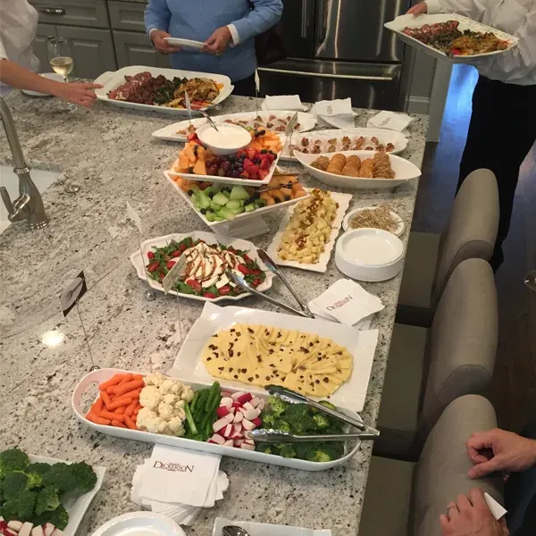
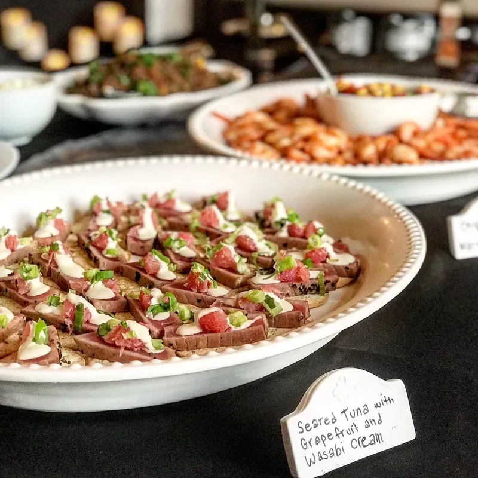
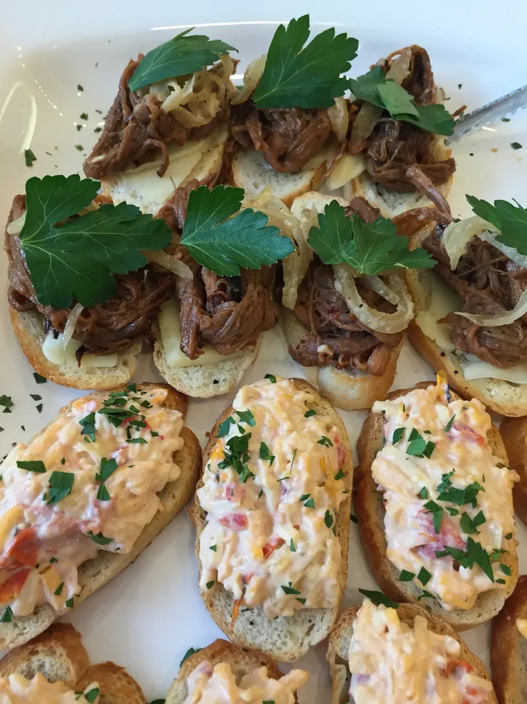
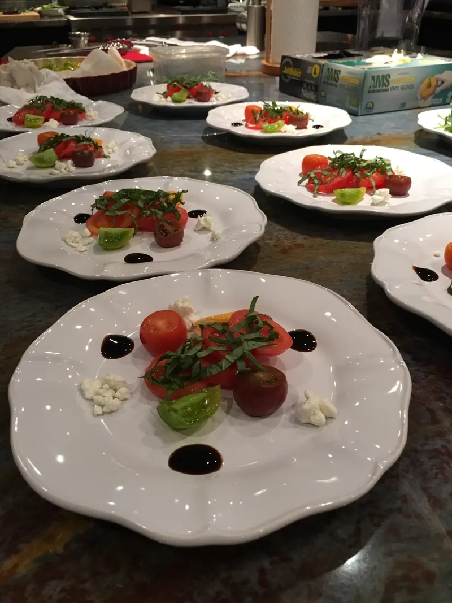
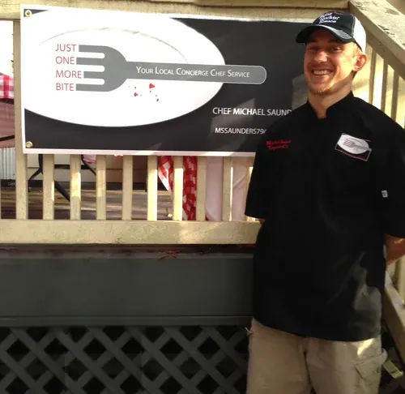
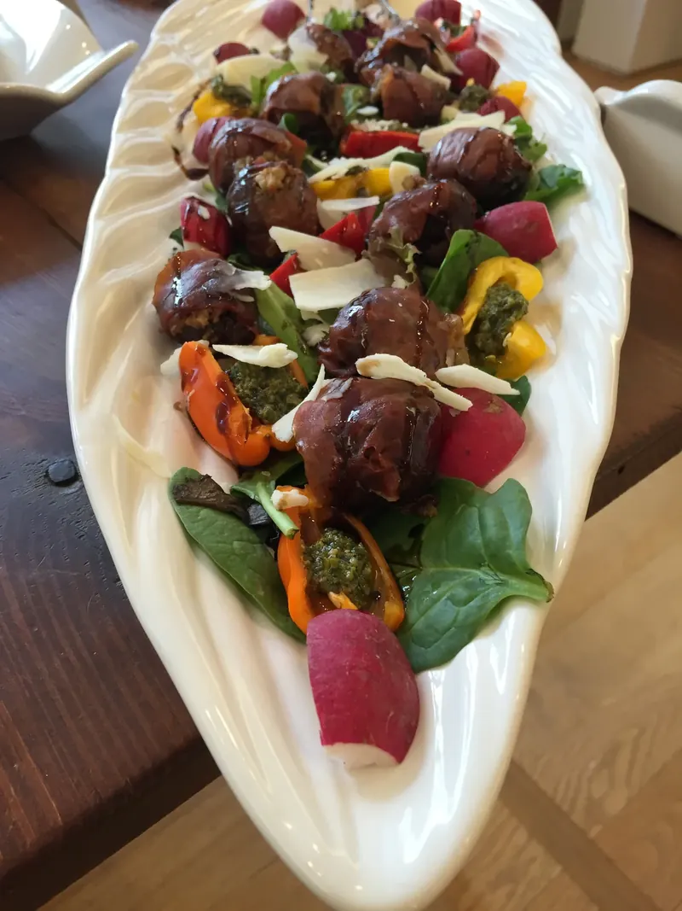
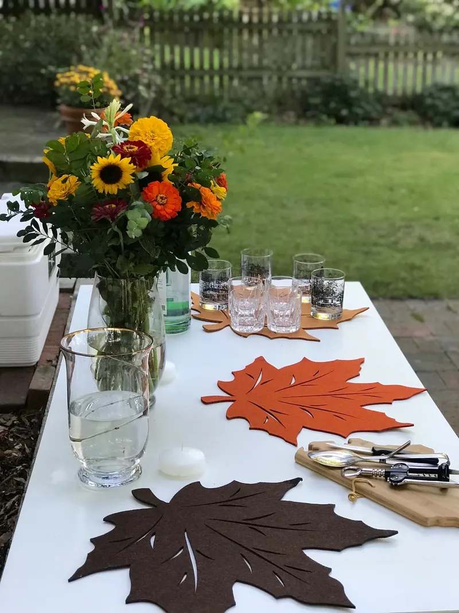

Buffet
A generous spread guests come back to: fresh salads, crudités and dips, grilled proteins and seasonal sides, all made from scratch.
Best forReceptions, office lunches, family celebrations and open houses
Just One More Bite caters weddings, rehearsal dinners, holiday parties, office events and fundraisers in Raleigh and across the Triangle. Choose buffet, plated or cocktail hors d'oeuvres; Chef Michael Saunders, formerly of Morton's The Steakhouse, writes a custom menu and quotes every event individually. Send your date, venue and guest count to start.
“His food is the highlight of the event.”
Sandi F., President, Ford's Gourmet Foods / Bone Suckin' Sauce, on the AFSN charity fundraiser JOMB co-sponsors


Booking holiday parties nowOffice parties, family dinners and open houses. Thanksgiving is Thursday, Nov 26.
Every menu is written for your event. Pick the style that fits your guests and your venue, and Chef Mike shapes the menu around it.

A generous spread guests come back to: fresh salads, crudités and dips, grilled proteins and seasonal sides, all made from scratch.
Best forReceptions, office lunches, family celebrations and open houses

Restaurant-style courses plated for every guest, with the polish of the fine-dining kitchens Chef Mike came from.
Best forRehearsal dinners, intimate weddings and formal dinners
Bites and platters made for mingling, like seared tuna crostini with grapefruit and wasabi cream, or pulled pork crostini.
Best forCocktail hours, showers, fundraisers and client events
Customized catering for the Triangle's biggest days and busiest weeks.
A menu built around the two of you, served as a buffet, a plated dinner or cocktail hors d'oeuvres.
The night-before dinner, done properly, so both families can sit down and actually talk.
Bites, platters and a spread that looks as good as it tastes, for a room full of people you love.
Office parties, family gatherings and open houses, from Thanksgiving through New Year's.
Booking now
Team lunches, client events and celebrations in Raleigh, Cary, Morrisville and Research Triangle Park.
JOMB co-sponsors Raleigh's yearly AFSN fundraiser for Adventure for Special Needs, a children's charity.
AFSN co-sponsor

Chef Michael Saunders at an eventEvery fall, Just One More Bite co-sponsors the Adventure for Special Needs (AFSN) children's charity fundraiser in Raleigh, alongside Ford's Gourmet Foods, the makers of Bone Suckin' Sauce. Their president has seen Chef Mike cook it up close:
He absolutely knows fine dining culinary skills and works well under pressure. I have been impressed with his punctuality, his integrity and his demanding ServSafe food handling standards. His food is the highlight of the event.
Steve Z., Executive Chef at Jimmy V's Steak House & Tavern, has worked alongside Chef Mike in restaurant kitchens and at private catering events.
I have worked with Michael Saunders in both kitchens and private catering events. His skills and passion for what he does is something that we miss here at the restaurant. He is an asset to any company.

Grilled skewers and greens for a catered partyOffice parties, family dinners and open houses from Thanksgiving (Thursday, November 26) through New Year's. Send your date and guest count, and Chef Mike will put a menu together for you.
Every event is quoted individually, because every menu is written for it. Here's the path:
The event, date, venue, guest count, service style, dietary needs and your budget.
Email or callChef Mike designs a menu around your guests and your budget, and you shape it together.
Your proposalChef Mike cooks your menu from scratch, so you can be a guest at your own party.
Your dayTap the button and these lines are pre-filled in your email. Fill in what you know so far.
Prefer to write your own? Email jomborders@gmail.com.
Buffet, plated dinners and cocktail hors d'oeuvres, all cooked from scratch by Executive Chef Michael Saunders and customized to your event. Every menu is built around what you and your guests love.
Yes: weddings and receptions, rehearsal dinners, showers and engagement parties in Raleigh and the Triangle. Send your date, venue and guest count to jomborders@gmail.com to start a custom menu.
Every event is quoted individually, because the menu is written for it. Tell us your guest count, the style of service you want and your budget, and Chef Mike will design a menu that fits.
Yes. Just One More Bite caters office lunches, client events and team celebrations in Raleigh, Cary, Morrisville and Research Triangle Park. For everyday meals, offices can also get JOMB's weekly menus delivered every Tuesday; see how it works.
Yes. Chef Mike is booking holiday parties and holiday dinners now, from office parties to family gatherings. Thanksgiving is Thursday, November 26, 2026. Email your date and guest count as early as you can.
It depends on the event, so ask for exactly what you need. Tell us about service, setup, rentals or anything else when you inquire, and your quote will spell out what Chef Mike provides.

Send your date, venue and guest count. Chef Mike will write a menu around your guests and your budget.
Booking holiday parties now · Or email jomborders@gmail.com